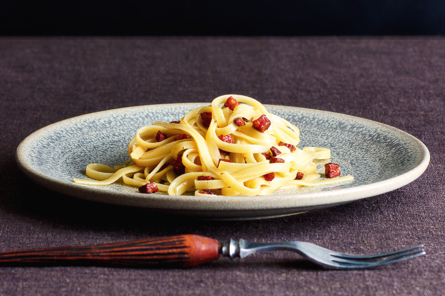

Monday night is improved night in kitchen.
After the weekend, the fridge is a trove of bits and pieces, little plates of leftovers, the remains of bunches and punnets. Turning
this cabinet of curiosities into dinner is more than just good housekeeping - it's a laboratory where discoveries can be made.
That's how somewhat Spanished-up version of spaghetti carbonara came into being. It had no ham or bacon, but spotted a chunk of
chorizo that would make a spicy substitute. Instead of opening a bottle of white wine to splash in, a bone-dry Spanish sherry
continued the theme. No spaghetti to hand but a pack of its sturdier cousin, linguine, instead. It was an instant
winner, so good that it has become a regular in my repertoire, even more so than the traditional version.
For 2.
200g (7 oz) linguine
1 teaspoon olive oil
100g (4 oz) chorizo, cut into small dice
2 eggs
30g (1/2 cup) pecorino (or Parmesan), finely grated
3 tablespoons dry sherry, such as Amontillado
sea salt flakes
freshly ground black pepper
Get the pasta on first in plenty of boiling water,
salted at 1 teaspoon of sea salt flakes for each litre of water.
Heat a small frying pan over medium heat. Drizzle in just enough oil to make a thin film across the bottom of the pan, then add
the little pieces of chorizo. Let them cook away, stirring occasionally, until they have taken on some colour and started to crisp up.
Break the eggs into a roomy bowl (you'll be using it to toss everything together later) and whisk together with a fork just to break
up and combine. Add the grated pecorino cheese and stir together.
Add the sherry to the chorizo and let it bubble up and reduce to become syrupy. If you still have some time to go before the pasta is
ready, move the pan off the heat until it's time for action stations, and back on to reheat just before draining the pasta.
Before draining the pasta, dip a measuring cup into the water and set aside.
Add the not-too-well drained pasta to the eggy cheese mixture, tossing quickly coat thoroughly. Add the chorizo and toss again, using
the reserved pasta water, added at a tablespoon a time, to thicken and emulsify your sauce as desired.
Serve, and finish with freshly ground black pepper and a smattering of pecorino grated over the top.
This recepie is taken from aforkandapencil.com